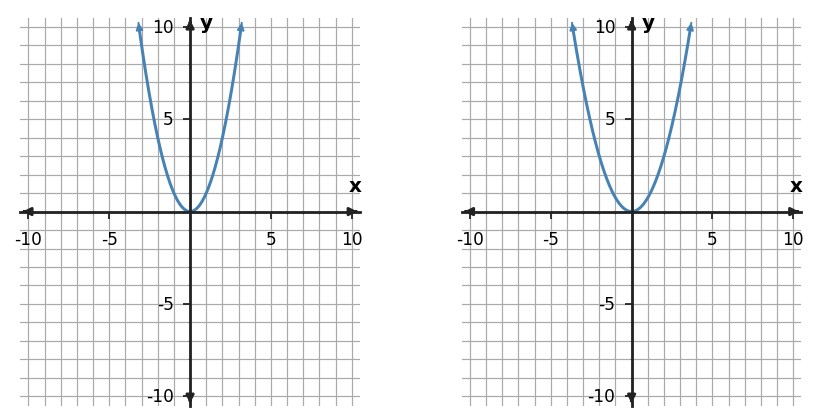

Classroom Copy 1
Station 2 • Set 1
Problem 5
Compare the left parent graph and the right transformed graph. Describe the transformation using stretch/compression/reflection language.

Problem 6
The parent values come from $y=x^2$. Apply the rule $g(x)=-1.5f(x)$ and complete the transformed y-values.
| x | Parent y | Transformed y |
|---|---|---|
| -2 | 4 | ? |
| -1 | 1 | ? |
| 0 | 0 | ? |
| 1 | 1 | ? |
| 2 | 4 | ? |
Problem 7
Use the graph pair to describe how a key point changes under the transformation. Give one correct point mapping.

Problem 8
Describe the transformation from $y=x^2$ to $y=2.5x^2$.